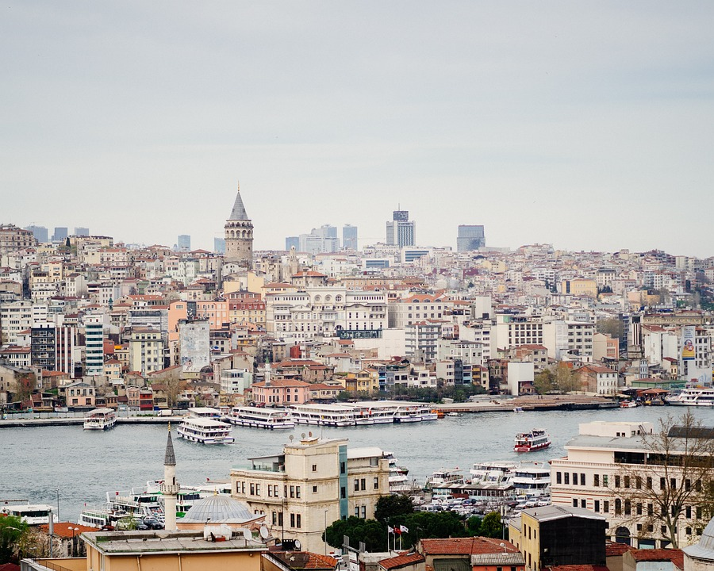

Travelers can experience an enthralling blend of old ruins, lively bazaars, and breathtaking natural beauty in Turkey, which is spread across two continents and has a rich historical past, various landscapes, and thriving towns. Turkey is a country that begs to be explored, from the busy streets of Istanbul to the lunar landscapes of Cappadocia and the turquoise waves of the Mediterranean coast. This comprehensive guide will assist you in discovering Turkey's hidden gems:
Istanbul, the largest city in Turkey and the former capital of the Byzantine and Ottoman Empires, is a great place to start your travels. Discover the famous Hagia Sophia, a Byzantine architectural wonder that was subsequently converted into a mosque and is currently a museum. Explore the magnificent Sultan Ahmed Mosque, which features six minarets and elaborate tile work.
Take a stroll around Sultanahmet Square, which is home to the Topkapi Palace complex, the former residence of Ottoman sultans. Explore the bustling Grand Bazaar, one of the biggest and oldest covered markets in the world, where you can purchase Turkish delicacies, rugs, ceramics, and spices. Go to the lively Beyoglu neighborhood by crossing the Galata Bridge, and ascend the Galata Tower for sweeping views of the Bosphorus Strait and Istanbul's skyline.
See homes on the riverside that span Europe and Asia, as well as palaces and mosques, while taking a leisurely sail around the Bosphorus.
Explore the strange landscapes of Cappadocia, a region in central Turkey renowned for its bizarre rock formations and historic cave houses. Admire the fairy chimneys at Göreme National Park, which are cone-shaped pillars and granite pinnacles formed by erosion and volcanic eruptions.
Explore the Göreme Open-Air Museum's rock-cut buildings decorated with Byzantine murals and take a stroll through the Rose and Love Valleys for expansive vistas. Experience a sunrise hot air balloon trip to get a bird's-eye perspective of the lunar-like landscape of Cappadocia, which is peppered with vineyards and cave hotels.
Investigate underground settlements like Derinkuyu and Kaymakli, which early Christians dug out of pliable volcanic rock to use as hiding spots during invasions. See artists at work by visiting Avanos pottery workshops, where you can even purchase locally crafted ceramics.
Travel southwest to Pamukkale, a natural wonder in the Aegean area of Turkey renowned for its ruins of ancient Hierapolis and terraces of travertine thermal pools. Stroll barefoot across the terraces covered in calcite, which are home to turquoise pools of mineral-rich water that have been created over eons by calcium deposits from hot springs.
Discover the remarkably preserved remains of Hierapolis, an antiquated Greco-Roman metropolis situated above the terraces of Pamukkale. See the Temple of Apollo, the Roman theater, and the Necropolis, which has ornate tombs and sarcophagi. Unwind at Cleopatra's Pool, a unique swimming experience created by warm waters and sunken Roman columns.
Explore Ephesus, one of the Mediterranean's best-preserved ancient cities, which is close to Turkey's western shore. Explore this Greco-Roman city's marble-paved streets and take in the well-preserved architecture of buildings like the Great Theater, the Library of Celsus, and the Temple of Artemis, one of the Seven Wonders of the Ancient World.
See the Terrace Houses (Houses of the Rich), where affluent Ephesians resided and were decorated with heating systems, mosaics, and frescoes. See the neighboring House of the Virgin Mary, a pilgrimage site where Mary is thought to have spent her last years, and the ruins of the Basilica of St. John.
Discover Antalya, a tourist town renowned for its historic old town, beautiful beaches, and turquoise waters, by taking a trip to Turkey's southern Mediterranean coast. Explore Hadrian's Gate and the historic Roman harbor at Kaleiçi, also known as Old Town, which is dotted with elegant Ottoman-era homes, hip cafés, and boutique hotels.
See mosaics, sarcophagi, and statues from ancient civilizations such as Lycia, Pamphylia, and Byzantium by visiting the Antalya Museum. Unwind on the beaches of Konyaaltı and Lara, or go on a boat ride along the Turquoise Coast to discover secret coves and sea caves.
Discover historic sites like the well-preserved Roman theater at Aspendos and the stadium, agora, and baths of the ancient city of Perge. Walk the Lycian Way, a long-distance path that passes through rocky terrain, historic sites, and seaside communities.
See Bodrum, a beach town on Turkey's Aegean coast renowned for its energetic nightlife, historic ruins, and picturesque shoreline. Discover the medieval fortification known as Bodrum Castle (Castle of St. Peter), which is home to the Museum of Underwater Archaeology, which features ancient items from shipwrecks.
Take a leisurely stroll among the upscale boats, cafes, and seafood eateries lining Bodrum's waterfront. See the historic theater at Bodrum and the Mausoleum at Halicarnassus, one of the Seven Wonders of the historic World. Take a boat journey to neighboring islands like Kos in Greece and Karaada (Pserimos) or simply unwind on the beaches of Bodrum.
Explore Ankara, the capital of Turkey and the geographic center of Anatolia. It is renowned for its museums, modern architecture, and historic fortress. See pottery, sculptures, and royal seals from the Phrygian, Hittite, and prehistoric periods of Turkish history by visiting the Museum of Anatolian Civilizations.
Discover the city's sweeping vistas from the top of Ankara Citadel (Ankara Kalesi), and pay homage to Emperor Augustus' accomplishments at the Roman-era Temple of Augustus and Monumentum Ancyranum. Explore the modernist Atatürk Mausoleum (Anıtkabir), a monument honoring Mustafa Kemal Atatürk, the father of Turkey.
Head east to Mount Nemrut, southeast Turkey's UNESCO World Heritage site, renowned for its enormous statues and historic tomb constructions. Climb to the top for a view of the stunning Taurus Mountains scenery and to see the enormous stone heads and statues of ancient gods and King Antiochus I of Commagene.
Explore the Hierotheseion, a temple-tomb sanctuary featuring reliefs and terraces that represent episodes from Persian and Greek mythology. See the statues silhouetted against the vibrant sky and the plains below during sunrise or sunset on Mount Nemrut.
Discover the outlying areas and historic locations of Eastern Turkey, such as Göbekli Tepe, one of the oldest temples in the world, which dates back more than 12,000 years. Explore Van's Akdamar Island, home to the biblical themes carved into reliefs and the Armenian Cathedral of the Holy Cross.
See the remains of churches, mosques, and the medieval city walls of Ani, the former capital of the Armenian people. Discover the cultural legacy of the Kurdish area, which includes traditional crafts, music, and hospitality. Explore the untamed terrain of Turkey's highest mountain, Mount Ararat, and look for Noah's Ark on its incline.
Savor the tastes of Ottoman, Middle Eastern, Mediterranean, and Central Asian cuisines that abound in Turkey. Savor regional specialties like pide (Turkish pizza), mezes (appetizers), and kebabs (grilled meats) accompanied by crisp salads and sauces made with yogurt.
Enjoy strong Turkish coffee or tea with sweets like baklava, künefe, and Turkish delight. Savor Turkish hospitality by having dinners with loved ones or at rooftop eateries that offer views of the cityscape and historical attractions.
Turkey has an extensive bus and airline network, as well as rental automobiles for touring the country's various areas. In Cappadocia, lodging options range from high-end hotels and boutique resorts to affordable guesthouses, hostels, and cave motels.
The Turkish Lira (TRY), which is widely accepted throughout the nation, is the official currency of Turkey. While credit cards are often accepted in urban and tourist destinations, it's best to have cash on hand for smaller transactions and in more rural places.
Turkey offers an amazing trip full of historic wonders, cultural diversity, and friendly people, whether you're hiking through Cappadocia's fairy chimneys, sailing down the Turquoise Coast, or discovering Istanbul's historic treasures.